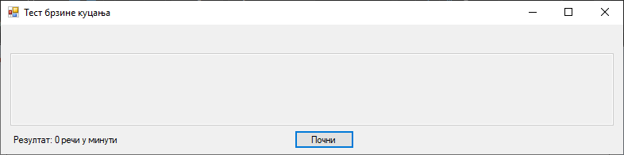
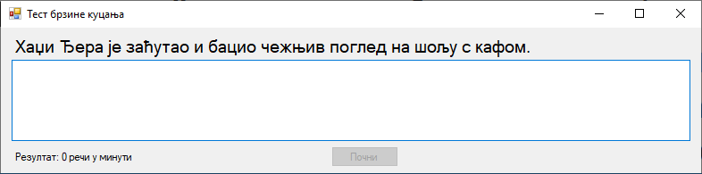
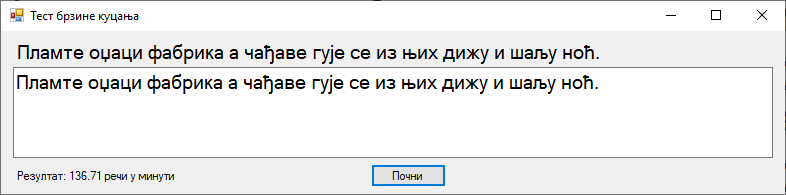

Задатак: Тест брзине куцања¶
На форму постави две лабеле, један оквир за текст и једно дугме. Када корисник кликне на дугме, у првој лабели треба да се прикаже насумично одабрана реченица из фајла „tekst.txt”. Када корисник у оквиру за текст исправно прекуца дату реченицу, у другој лабели треба да се прикаже брзина куцања корисника.



Реченице у фајлу „tekst.txt” треба да буду унете на следећи начин:
Фијуче ветар у шибљу, леди пасаже и куће иза њих и гунђа у оџацима.
Вук Његошу: "Не ломи џабе перо, дођи тићу, чије се фаце зажељех".
Ниџо, чежњиво гледаш фотељу, а Ђура и Мика хоће позицију себи.
Људи, јазавац Џеф трчи по шуми глођући неко сухо жбуње.
Боја ваше хаљине, госпођице Џафић, тражи да за њу кулучим.
Хаџи Ђера је заћутао и бацио чежњив поглед на шољу с кафом.
Џабе се зец по Хомољу шуња, чувар Јожеф лако ће и ту да га нађе.
Оџачар Филип шаље осмехе туђој жени, а његова кућа без деце.
Џајић одскочи у аут и избеже ђон халфа Пецеља и његов шамар.
Пламте оџаци фабрика а чађаве гује се из њих дижу и шаљу ноћ.
Ајшо, лепото и чежњо, за љубав срца мога, дођи у Хаџиће на кафу.
Љубазни фењерџија чађавог лица хоће да ми покаже штос.
Могуће решење задатка¶
using System;
using System.Collections.Generic;
using System.Diagnostics;
using System.Linq;
using System.Windows.Forms;
using System.IO;
namespace TestBrzogKucanja
{
public partial class Form1 : Form
{
private List<string> recenice;
private string recenica;
private Stopwatch stoperica;
private Random random;
public Form1()
{
InitializeComponent();
InicijalizujIgru();
}
private void InicijalizujIgru()
{
random = new Random();
recenice = File.ReadAllLines("tekst.txt").ToList();
label1.Text = string.Empty;
label2.Text = "Резултат: 0 речи у минути";
textBox1.Text = string.Empty;
textBox1.Enabled = false;
button1.Text = "Почни";
stoperica = new Stopwatch();
}
private void button1_Click(object sender, EventArgs e)
{
recenica = recenice[random.Next(recenice.Count)];
label1.Text = recenica;
label2.Text = "Резултат: 0 речи у минути";
textBox1.Enabled = true;
textBox1.Clear();
textBox1.Focus();
button1.Enabled = false;
stoperica.Reset();
stoperica.Start();
}
private void textBox1_TextChanged(object sender, EventArgs e)
{
if (textBox1.Text == recenica)
{
stoperica.Stop();
button1.Enabled = true;
button1.Focus();
Rezultat();
}
}
private void Rezultat()
{
double elapsedMinutes = stoperica.Elapsed.TotalMinutes;
int wordCount = recenica.Split(' ').Length;
double wordsPerMinute = wordCount / elapsedMinutes;
label2.Text = $"Резултат: {wordsPerMinute:F2} речи у минути";
}
}
}
Додатни задатак¶
Омогући да се рад „штоперице” приказује на форми током куцања.
Омогући чување 50 последњих резултата у фајлу
score.log.Обради могуће изузетке, нарочито приликом рада са фајлом.